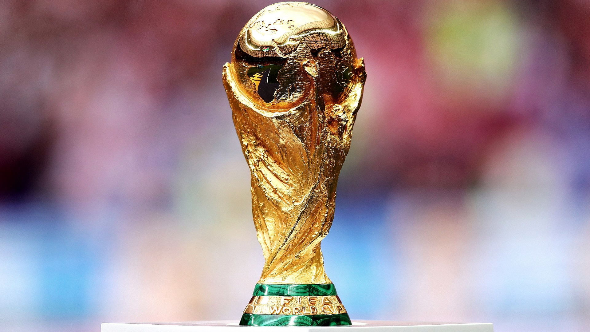

Campeones del Mundo
A lo largo de la historia de los Mundiales, varias selecciones han logrado levantar la Copa del Mundo. Brasil es el país con más títulos, seguido por Alemania e Italia. Cada campeonato ha dejado grandes equipos y jugadores que marcaron una época.

Seleciones más ganadoras
- Brasil - 5 títulos
- Alemania - 4 títulos
- Italia - 4 títulos
- Argentina - 3 títulos
- Francia - 2 títulos